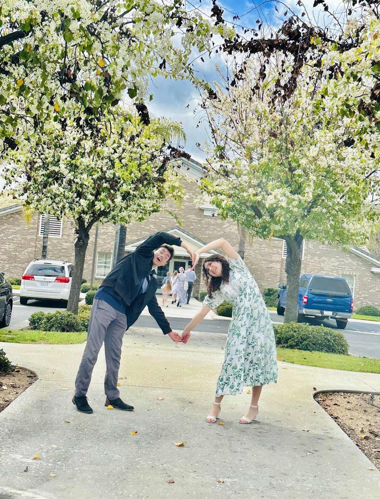
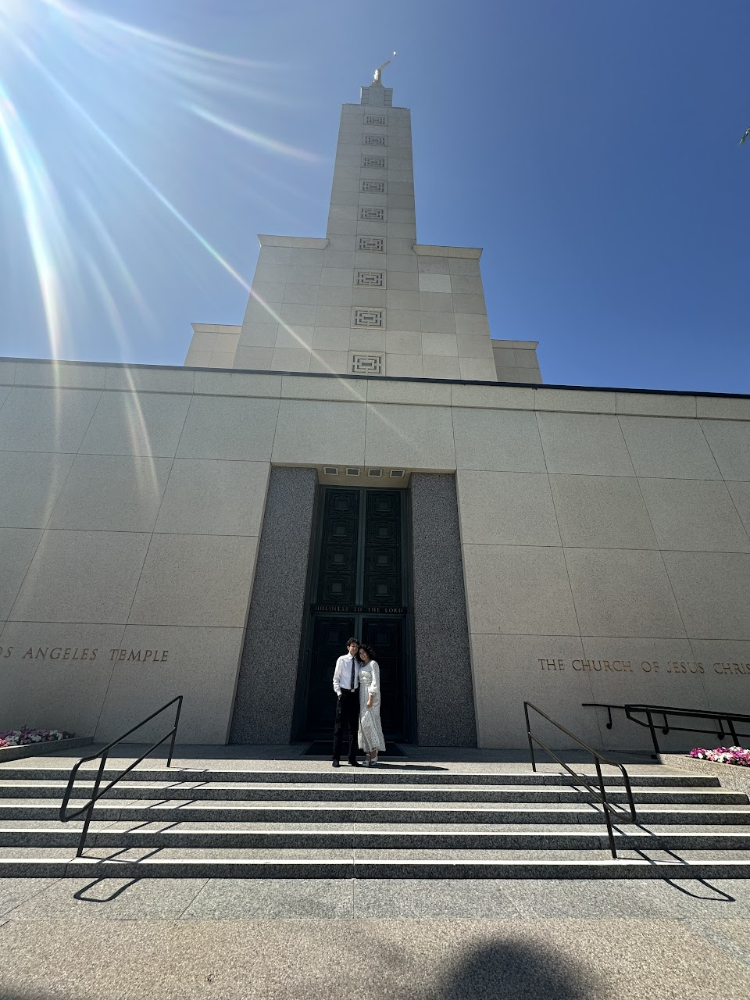
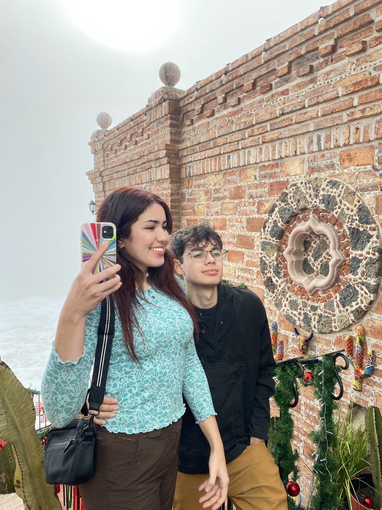

Algunos detalles extras
Tú sabes cuánto me encanta ser detallista contigo, así que creé tres diferentes sitios donde puedes interactuar y pasar un buen rato.
Algunas de nuestras dates
Cada cita contigo se convierte en un momento inolvidable, y no solo por las experiencias que compartimos, sino por la forma tan especial en que me tratas y por las pequeñas acciones que reflejan tu esencia única. Por eso, decidí escribirte sobre algunas de nuestras citas, acompañadas de los sentimientos y emociones que hicieron que te amara aún más.
01/27
-Hoy aparte de que acepto darme el privilegio de ser su novio, me enamoré del como en la mañana pude tener un momento espiritual y también de mucha química.
02/03
-Me enamoro la manera en la que me ayudo en este proyecto.
02/10
-Templo + Annita = Mi pedazo de cielo.

02/18
-No hay mejor experiencia que ir a la capilla con mi casimerito
03/04
-Aunque me hago del rogar me encanta cuando mi niña me consiente con mascarillas y masajes.
03/17
-Me ecantan estos dias, no hay mejor date que una date en la churcho con mi persona favorita con mi vestido favorito
04/03
-Todos chimuelos pero enamorados, me encanto el como nos dabamos kekitos y cariño apesar de estar todos lastimados.
04/09 -
(Primera conferencia general juntos) Me enamoré mucho más de ella al poder tener momentos espirituales, en familia, de amor, de calentura de pollo y comida rica.
04/26 -
Ame bailar con mi niña hermosa y el haber tenido el privilegio de se su pareja en prom, donde a pesar de estar todos sus amigos ella me puso como su prioridad y vaya que me consintio.
05/02
-Amo que pueda tener aquella persona que hasta los viajes largos los vuelve rapidos con lo feliz que me hace.
05/04
-Amo las citas con ellas, que aunque sean “sencillas” ella las vuelve especiales.
05/15
-Amo la disposición y como se aferrada cuando quiere cumplir con el capricho de las personas que ama.
05/20
-De las mejores citas posibles, donde destacaría 3 cosas que me enamoraron de ella: lo valiente para conducir por primera vez una distancia larga en freeway, lo feliz que ella es al comer sushi y lo atractiva que se ve en su traje de baño.
05/30 -
Dia especial: Graduación de la HS, estoy muy oruglloso por este gran exito de ella, porque más que una graduación detras hay muchos sacrificios y progreso en cada reto que supero.
06/02
-Graduación de Seminario, me enamoro al ver que ella no tan solo destaca en lo terrenal, sino también en lo espiritual.
06/18
-Me encanto el como se esmero en esta date con outfit de inside out, igual hoy me enamoro al escuchar sus latidos al acostarme sobre su pecho mientras me rascaba.
06/25
-Me enamoro al pasar dias completos como hoy, donde fue de muchas experiencias y actividades que nos ofrecen la experiencia de vivir juntos.
06/26
-Ame la disposición de mi niña al madrugarle y el resto de sacrificios que hace para vernos.
07/13
-Me enamore al regresar al lugar donde “empezo” todo y pero ahora volviendolo más especial al hacerlo como novios.
07/16
-Aunque hoy fue un dia super especial en nuestra cita, yo detacaría el como ella se preocupo por mi integridad física y emocional con los imprevistos que salieron al regresar a casa.
07/19
-Me enamoraron 3 cosas; el como trato a mi familia, el como me tiene paciencia y el como es muy buena con los niños

08/09
-Fue la experiencia más hermosa al verla entrar al templo por primera vez y quería estar más cerca a ella pero quería que el protagonismo lo tuviera con sus papás al pensar en un futuro por ella, porque se que en el futuro tendremos experiencias igual de espciales pero en pareja.
08/19
-Ame nuestra cita express para comer, pero hoy destaco el como me envía mensajes random con un te amo y expresando el como se siente conmigo.
08/21
-Ame la manera en la cual se despidió hoy de mi después de nuestra cita, creo que es la parte más especial donde el afecto físico y palabras son necesarios para poder separarnos físicamente por un tiempo.
08/31
-Me encanto el tenerla como mi copiloto, el que pudiese darle ese trato que ella se merece, pero me encanto más cuando me agarraba la pierna o me dejaba darle kekitos.
09/07
-El dia de tu despedida, estoy super agradecido y enamorado por ella y todos los meses que pasamos juntos, ahora toca esforzarnos individualmente y en linea.
10/05
-Segunda Conferencia General juntos, me encanto que a pesar de la distancia el poner al Salvador como nuestro centro nos permite sentirnos más conectados y con propósito.
12/17
-Sin dudas de las mejores citas que hemos tenido, aunque no fue fácil el llevar acabo la cita, valió completamente la pena el darle ese trato que ella se merece, donde yo pueda cubrir la areá temporal y ella la areá emocional.

12/18 -
Hoy fue un día perfecto, por lo que no puedo decir una sola cosa que me encanto, así que dare una lista la cual no lleva orden, me encanto el como ella resuelve para consentirme, me enamoro de cada beso tan especial que me da, ame cuando abrió sus sentimentos sobre el futuro, me enamoró el ver como a ella le encanto la comida pero sobre todo el ambiente del restaurante y por último y no menos importante, ame el tenerla de copilito.
Agarrate que es el principio de toda una vida llena de experencias juntos.